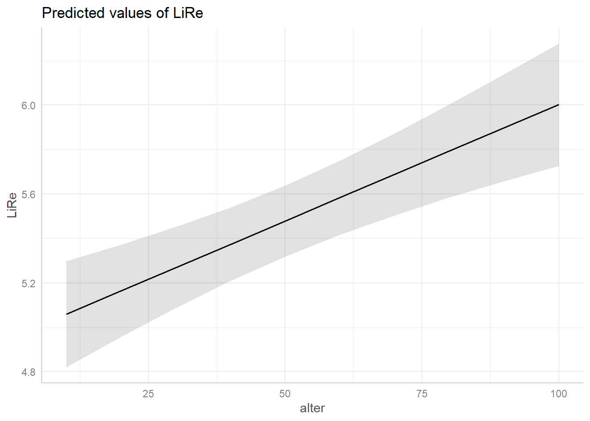

Bei der multiplen linearen Regression wird der Einfluss mehrerer unabhängiger Variablen auf eine abhängige metrische Variable untersucht. Je nachdem, ob das Forschungsdesign x-oder y-zentriert ist, wird versucht, die Varianz in der abhängigen Variable möglichst umfassend zu erklären (y-zentriert) oder den Einfluss der unabhängigen Variablen auf die abhängige Variable (x-zentriert) zu prüfen. In dieser Sitzung werden wir eine multiple lineare Regression durchführen, die Ergebnisse interpretieren und die wichtigsten statistischen Tests im Zusammenhang mit der multiplen linearen Regression durchführen.
getwd()
setwd("eigener Pfad")library(foreign)
gles <- read.spss(file = "ZA6801_de_v4-0-1.sav", to.data.frame = TRUE)
lijphart <- read.csv2("Lijphart_Data_recode.csv")# GLES
# Alter
q2c_num <- as.numeric(as.character(gles$q2c))
gles$alter <- 2017 - q2c_num
# Geschlecht
names(gles)[names(gles) == "q1"] <- "geschlecht"
# Einkommen kategorial
gles$einkommen_cat[gles$q192 == "unter 500 Euro" |
gles$q192 == "500 bis unter 750 Euro" |
gles$q192 == "750 bis unter 1000 Euro"] <- "weniger als 1000"
gles$einkommen_cat[gles$q192 == "1000 bis unter 1250 Euro" |
gles$q192 == "1250 bis unter 1500 Euro" |
gles$q192 == "1500 bis unter 2000 Euro"] <- "1000 bis 1999"
gles$einkommen_cat[gles$q192 == "2000 bis unter 2500 Euro" |
gles$q192 == "2500 bis unter 3000 Euro"] <- "2000 bis 2999"
gles$einkommen_cat[gles$q192 == "3000 bis unter 4000 Euro"] <- "3000 bis 3999"
gles$einkommen_cat[gles$q192 == "4000 bis unter 5000 Euro"] <- "4000 bis 4999"
gles$einkommen_cat[gles$q192 == "5000 bis unter 7500 Euro"] <- "5000 bis 7499"
gles$einkommen_cat[gles$q192 == "7500 bis unter 10000 Euro" |
gles$q192 == "10000 Euro und mehr"] <- "7500 und mehr"
gles$einkommen_cat <- factor(gles$einkommen_cat,
levels = c("weniger als 1000",
"1000 bis 1999",
"2000 bis 2999",
"3000 bis 3999",
"4000 bis 4999",
"5000 bis 7499",
"7500 und mehr"))
# Einkommen numerisch
gles$einkommen_num[gles$einkommen_cat == "weniger als 1000"] <- 1
gles$einkommen_num[gles$einkommen_cat == "1000 bis 1999"] <- 2
gles$einkommen_num[gles$einkommen_cat == "2000 bis 2999"] <- 3
gles$einkommen_num[gles$einkommen_cat == "3000 bis 3999"] <- 4
gles$einkommen_num[gles$einkommen_cat == "4000 bis 4999"] <- 5
gles$einkommen_num[gles$einkommen_cat == "5000 bis 7499"] <- 6
gles$einkommen_num[gles$einkommen_cat == "7500 und mehr"] <- 7
# Wohnort
gles$wohnort[gles$q197 == "Grossstadt"] <- "Großstadt"
gles$wohnort[gles$q197 == "kleine oder mittelgrosse Stadt"] <- "Kleinstadt"
gles$wohnort[gles$q197 == "laendliche Gegend oder Dorf"] <- "Land"
gles$wohnort[gles$q197 == "Vorstadt/ Vorort einer Grossstadt"] <- "Vorstadt"
# Links-Rechts-Selbsteinstufung
gles$LiRe <- as.character(gles$q32)
gles$LiRe[gles$LiRe == "1 links"] <- "1"
gles$LiRe[gles$LiRe == "11 rechts"] <- "11"
gles$LiRe <- as.numeric(gles$LiRe)
# Links-Rechts-Selbsteinstufung aggregiert
gles$LiRe_cat[gles$LiRe >= 1 &
gles$LiRe <= 2] <- "links"
gles$LiRe_cat[gles$LiRe >= 3 &
gles$LiRe <= 4] <- "moderat links"
gles$LiRe_cat[gles$LiRe >= 5 &
gles$LiRe <= 7] <- "mittig"
gles$LiRe_cat[gles$LiRe >= 8 &
gles$LiRe <= 9] <- "moderat rechts"
gles$LiRe_cat[gles$LiRe >= 10 &
gles$LiRe <= 11] <- "rechts"
gles$LiRe_cat <- factor(gles$LiRe_cat,
levels = c("links",
"moderat links",
"mittig",
"moderat rechts",
"rechts"))
# AfD-Wahl
gles$AfD.Wahl[gles$q19ba == "AfD"] <- 1
gles$AfD.Wahl[gles$q19ba != "AfD"] <- 0Wenn alles geklappt hat, sehen Sie rechts oben im Global Environment die beiden Datensätze gles mit 2112 Beobachtungen und 602 Variablen und lijphart mit 36 Beobachtungen und 74 Variablen.
Die Regressionskoeffizienten \(b_j\) geben den Effekt einer unabhängigen Variable auf die abhängige Variable an. Bei mehreren unabhängigen Variablen werden die Regressionskoeffizienten nach \(b_0\) fortlaufend mit \(b_1\), \(b_2\) etc. indiziert. Die Regressionsgleichung lautet:
\(y_i=b_0+b_1 * x_{1i}+b_2*x_{2i}+b_j*x_{ji}+e_i\).
Im konkreten Modell erklären wir die Links-Rechts-Selbsteinstufung der Befragten anhand ihres Alters, Geschlechts und Wohnorts. Die Gleichung lautet also:
\(LiRe_i=b_0+b_{alter_i} * x_{alter_i} + b_{geschlecht_i} * x_{geschlecht_i} + b_{wohnort_i} * x_{wohnort_i} + e_i\)
Wie in der vorherigen Sitzung zur bivariaten linearen Regression
gezeigt, berechnen wir lineare Regressionen in R mit dem
Befehl lm(). Allerdings fügen wir nun jeweils mit einem +
zusätzliche Variablen hinzu. Dadurch wird nicht mehr bloß der Effekt des
Alters auf die Links-Rechts-Selbsteinstufung geschätzt, sondern der
Effekt von Alter, Geschlecht und Wohnort parallel. Mit dem Argument data
= gles wählen wir den Datensatz aus. Der Befehl lautet
also:
lm(LiRe ~ alter + geschlecht + wohnort, data = gles)##
## Call:
## lm(formula = LiRe ~ alter + geschlecht + wohnort, data = gles)
##
## Coefficients:
## (Intercept) alter geschlechtweiblich wohnortKleinstadt wohnortLand wohnortVorstadt
## 4.47512 0.01047 -0.43886 0.47961 0.55996 0.33990Während sich bei der bivariaten linearen Regression insbesondere das
Plotten der Regressionsgeraden eignet, haben wir diese Möglichkeit bei
der multiplen linearen Regression nicht. Die visuelle Darstellung müsste
bei drei unabhängigen Variablen und einer abhängigen Variable
vierdimensional sein. Deshalb beschränken wir uns bei der Darstellung
auf die Effekte. Einen detaillierteren Regressionsoutput erhalten wir,
wenn wir den Output von lm() in einem Objekt speichern.
Dafür geben wir dem Modell einen Namen, hier modell. Dieses lassen wir
uns mit dem Befehl summary() ausgeben:
modell <- lm(LiRe ~ alter + geschlecht + wohnort, data = gles)
summary(modell)##
## Call:
## lm(formula = LiRe ~ alter + geschlecht + wohnort, data = gles)
##
## Residuals:
## Min 1Q Median 3Q Max
## -4.8343 -1.3085 0.1901 1.1156 6.2517
##
## Coefficients:
## Estimate Std. Error t value Pr(>|t|)
## (Intercept) 4.475121 0.148485 30.139 < 2e-16 ***
## alter 0.010471 0.002272 4.608 4.33e-06 ***
## geschlechtweiblich -0.438857 0.085989 -5.104 3.65e-07 ***
## wohnortKleinstadt 0.479610 0.117138 4.094 4.40e-05 ***
## wohnortLand 0.559962 0.117634 4.760 2.08e-06 ***
## wohnortVorstadt 0.339904 0.187732 1.811 0.0704 .
## ---
## Signif. codes: 0 '***' 0.001 '**' 0.01 '*' 0.05 '.' 0.1 ' ' 1
##
## Residual standard error: 1.9 on 1957 degrees of freedom
## (149 observations deleted due to missingness)
## Multiple R-squared: 0.03567, Adjusted R-squared: 0.03321
## F-statistic: 14.48 on 5 and 1957 DF, p-value: 5.932e-14Im Gegensatz zu der Standardausgabe mit summary() gibt
uns der Befehl stargazer() eine geordnete Ausgabe mit der
Zahl der Beobachtungen, statistischen Maßzahlen, Signifikanzniveaus usw.
Wir fügen der Funktion stargazer() das Argument
type = "text" hinzu, damit wir eine interpretierbare
Ausgabe in der Konsole erhalten:
#install.packages("stargazer")
library(stargazer)
stargazer(modell, type = "text")##
## ===============================================
## Dependent variable:
## ---------------------------
## LiRe
## -----------------------------------------------
## alter 0.010***
## (0.002)
##
## geschlechtweiblich -0.439***
## (0.086)
##
## wohnortKleinstadt 0.480***
## (0.117)
##
## wohnortLand 0.560***
## (0.118)
##
## wohnortVorstadt 0.340*
## (0.188)
##
## Constant 4.475***
## (0.148)
##
## -----------------------------------------------
## Observations 1,963
## R2 0.036
## Adjusted R2 0.033
## Residual Std. Error 1.900 (df = 1957)
## F Statistic 14.479*** (df = 5; 1957)
## ===============================================
## Note: *p<0.1; **p<0.05; ***p<0.01Wollen wir diese Tabelle später in eine Datei kopieren, ändern wir im
Code das Argument zu type = „html“. Dadurch wird eine Datei
im Arbeitsverzeichnis abgelegt. Beim Anklicken dieser Datei öffnet sich
eine Website, von der wir die Tabelle durch die Tastenkombination
Strg. + C (Windows) bzw. Cmd. + C (Mac)
kopieren und in unsere Datei einfügen können.
Eine grafische Visualisierungsoption bietet das Paket
ggeffects. Zunächst verwenden wir die Funktion
ggpredict(), mit der wir die vorhergesagten Werte für die
abhängige Variable LiRe für bestimmte Werte der
unabhängigen Variablen berechnen.
#install.packages("ggeffects")
library(ggeffects)
ggpredict(modell)## $alter
## # Predicted values of LiRe
##
## alter | Predicted | 95% CI
## --------------------------------
## 10 | 5.06 | [4.82, 5.30]
## 20 | 5.16 | [4.96, 5.37]
## 30 | 5.27 | [5.09, 5.45]
## 40 | 5.37 | [5.21, 5.54]
## 60 | 5.58 | [5.42, 5.75]
## 70 | 5.69 | [5.50, 5.87]
## 80 | 5.79 | [5.58, 6.00]
## 100 | 6.00 | [5.73, 6.28]
##
## Adjusted for:
## * geschlecht = maennlich
## * wohnort = Kleinstadt
##
## $geschlecht
## # Predicted values of LiRe
##
## geschlecht | Predicted | 95% CI
## -------------------------------------
## maennlich | 5.48 | [5.32, 5.64]
## weiblich | 5.04 | [4.87, 5.21]
##
## Adjusted for:
## * alter = 50.12
## * wohnort = Kleinstadt
##
## $wohnort
## # Predicted values of LiRe
##
## wohnort | Predicted | 95% CI
## -------------------------------------
## Land | 5.56 | [5.40, 5.72]
## Kleinstadt | 5.48 | [5.32, 5.64]
## Vorstadt | 5.34 | [5.01, 5.67]
## Großstadt | 5.00 | [4.80, 5.20]
##
## Adjusted for:
## * alter = 50.12
## * geschlecht = maennlich
##
## attr(,"class")
## [1] "ggalleffects" "list"
## attr(,"model.name")
## [1] "modell"Im Output sehen wir die für LiRe vorhergesagten Werte,
wenn alter bestimmte Werte annimmt. Wenn eine Person zehn Jahre ist,
sagt das Modell also eine Position auf der subjektiven Links-Rechtsachse
von 5.06 vorher. Für 60-jährige im Mittel eine Position von 5.58 usw.
Darunter finden wir analog die Vorhersagen für die anderen unabhängigen
Variablen.
Diese Vorhersagewerte wollen wir nun visualisieren. Wir verwenden
jeweils die base-Funktion plot, die wir auf den Output von
ggpredict() anwenden. Je nach Klasse der Variablen erhalten
wir unterschiedliche Plots: Für das Alter als kontinuierliche Variable
erhalten wir eine Gerade, welche die Vorhersagewerte für
LiRe über die Ausprägungen von alter darstellt. Für die
kategorialen Variablen geschlecht und wohnort werden jeweils die
Vorhersagewerte pro Kategorie geplottet. In beiden Fällen sind die
Konfidenzintervalle abgebildet: Um die Gerade des Alters als grau
hinterlegter Bereich, um die Vorhersagewerte des Geschlechts und des
Wohnorts mit Markern. Für die kontinuierliche Variable alter wird der
Effekt also durch die Steigung der Geraden abgebildet, für die
kategorialen geschlecht und wohnort sind sie direkt anhand der Skala auf
der Y-Achse abzulesen.
plot(ggpredict(modell, terms = "alter"))
plot(ggpredict(modell, terms = "geschlecht"))plot(ggpredict(modell, terms = "wohnort"))Die Regressionskoeffizienten stehen in der ersten Spalte des erzeugten Outputs. In der zweiten Spalte sind Standardfehler der Regressionskoeffizienten, in der dritten t-Werte und in der vierten p-Werte mit “Signifikanz-Sternchen” (s. Legende darunter) abgetragen. Unten sehen wir Standardfehler des Modells und Freiheitsgrade sowie den multiplen Determinationskoeffizienten \(r^2\) und das \(adj. r^2\). Schließlich wird der F-Test für das Gesamtmodell mitsamt p-Wert berichtet.
Das Modell mit den unabhängigen Variablen alter,
geschlecht und wohnort kann die Varianz in der
abhängigen Variable LiRe nur zu einem sehr geringen Anteil
von etwas mehr als 3 % erklären (\(r^2\) = 0.036 und \(adj. r^2\). = 0.033). In einer
Forschungsarbeit müssten wir prüfen, ob die Erklärungsleistung des
Modells mithilfe zusätzlicher unabhängiger Variablen erhöht werden kann.
Der p-Wert der F-Statistik zeigt allerdings, dass das
Modell die abhängige Variable insgesamt signifikant besser erklärt als
ein Modell ohne unabhängige Variablen. Die von uns berücksichtigten
Variablen sind (mit Ausnahme von Wohnort Vorstadt) statistisch hoch
signifikant, d.h. es ist sehr unwahrscheinlich, dass der festgestellte
Koeffizient in der Grundgesamtheit gleich Null ist (das 99.9
%-Konfidenzintervall um den Koeffizienten beinhaltet die Null nicht).
Für Wohnort Vorstadt beinhaltet zumindest das 90 %-Konfidenzintervall
die Null nicht.
Wenn wir die Regressionskoeffizienten in die allgemeine Gleichung eingesetzt werden, kann das Modell durch folgende Gleichung beschrieben werden:
\(LiRe_i=4.475+ 0.010 * x_{alter_i} -0.439 * x_{geschlecht_i} + 0.480 * x_{kleinstadt_i} + 0.560 * x_{land_i} + 0.340 * x_{vorstadt_i} + e_i\)
Mithilfe des F-Tests kann überprüft werden, ob das
Regressionsmodell in der Grundgesamtheit überhaupt eine
Erklärungsleistung aufweist. R gibt den empirischen Wert
der Teststatistik und die Freiheitsgrade automatisch an. Ist der
empirische F-Wert größer als der Rückweisungswert für F, kann die \(H_0\) verworfen werden, d.h. große F-Werte
sprechen für die \(H_1\).
Schließlich kann mithilfe des t-Tests für die
einzelnen Regressionskoeffizienten geprüft werden, ob sie in der
Grundgesamtheit von 0 verschieden sind. R gibt die
empirischen t-Werte der Teststatistik ebenfalls selbstständig an, sie
stehen in der dritten Spalte (t-value). Fällt der t-Wert außerhalb des
Annahmebereichs für die \(H_0\), wird
die \(H_0\) zurückgewiesen, dass der
Wert des Koeffizienten in der Grundgesamtheit gleich Null ist.
q32) regressieren. Beachten
Sie, dass Sie die Variablen ggf. sinnvoll umkodieren müssen. Lassen Sie
sich die Ergebnisse mithilfe des stargazer-Pakets ausgeben.